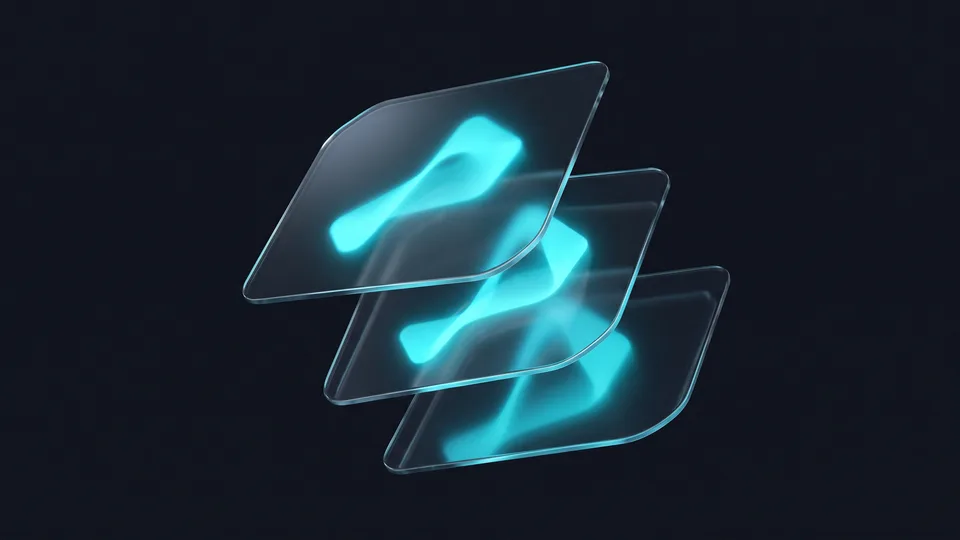

Trend döngüsü neden bu kadar kısaldı?
Döngü kısaldı; çünkü markalar aynı görseli onlarca ekran biçiminde yayımlıyor. Bir yıl önce taze duran palet, bugün rakip vitrininde standart görünüyor. Değişimi hızlandıran şey moda hevesi değil. Kendi proje takvimlerimizde gördüğümüz kadarıyla ekran sayısının ve platform biçimlerinin artması bu tempoyu belirliyor.
Görsel dilin ömrü kısalıyor. Kurumsal kimliğin yıllarca dokunulmadan dayandığı dönem geride kaldı. Aynı marka bugün tek haftada üç ayrı format üretiyor; grafik tasarım trendleri bu hızda değişiyor.
Ekran alışkanlığı da denklemin parçası. Grafik tasarım trendleri tam bu doygunluk noktasında yön değiştiriyor. Ekran arttıkça karşılaşma artıyor; dün taze duran biçim çabuk tanıdık geliyor.
Döngüyü hızlandıran üç etken
Grafik tasarım trendleri üç baskının kesiştiği yerde şekilleniyor. Birincisi platform biçimlerinin sık değişmesi; dünkü kapak ölçüsü bugün kırpılıyor. İkincisi üretim maliyetinin düşmesi, çünkü küçük ekipler bile haftada onlarca varyant çıkarıyor. Üçüncüsü taklidin hızlanması; beğenilen düzen kısa sürede rakip vitrininde beliriyor.Trend mi, geçici heves mi?
Kalıcı yönelim, birden fazla sektörde aynı anda görülen görsel eğilimdir. Heves ise tek platformda parlayıp sönen biçimdir. Ayırmak için basit bir eşik kullanıyoruz: bir biçim iki çeyrek üst üste farklı sektörlerde görünüyorsa yatırıma değer. Grafik tasarımda trend takibi böylece kumar olmaktan çıkıyor.Bu yıl hangi görsel yönelimler öne çıkıyor?
Öne çıkan yönelimler üç başlıkta toplanıyor: uyarlanabilir kimlikler, yüksek kontrastlı tipografi ve sade hareket. Üçü de aynı ihtiyaçtan doğuyor. Marka, farklı ekran biçimlerinde tanınırlığını yitirmeden görünmek istiyor. Üçü de iki çeyrekten uzun süredir tekrar ettiği için takvime alınmayı hak ediyor; süsleme geriliyor, okunabilirlik öne geçiyor.
Grafik tasarım trendleri bu yıl sadeleşme ekseninde ilerliyor. Renk tarafında ton sayısı azalıyor, kontrast yükseliyor. Kimlik takvimini sosyal video ve Reels üretimiyle birlikte kuran markalar bu uyumu daha kolay yakalıyor.
Yapay zekâ destekli görsel üretimi yaygınlaştıkça birbirine benzeyen kompozisyonlar çoğaldı. 2026'nın grafik tasarım trendleri bu yüzden daha çok görsel değil, daha ayırt edici görsel istiyor. Elle kurgulanmış detay yeniden değer kazandı.
Uyarlanabilir kimlikler
Uyarlanabilir kimlik, marka logosunu ve renk sistemini her mecrada yeniden kurgulanabilir kurallarla tanımlayan yapıdır. Kare vitrinde geniş versiyon, dikey videoda daraltılmış versiyon çalışıyor. Bu yapı gözlem listemizde çeyreklerdir tekrar ettiği için yıllık kararın ilk maddesi olmayı hak ediyor.Yüksek kontrastlı tipografi
Yazı karakteri seçimi bu yıl dekoratif olmaktan çıktı. Küçük ekranda okunmayan başlık, ne kadar zarif olursa olsun işe yaramıyor. Kalın ağırlıklar öne çıkıyor. Tipografi tarafındaki tasarım trendleri erişilebilirliğe kaydığı için yazı ailesi kararını sezon açılmadan bir çeyrek önce veriyoruz.Kontrast kararını takvimin hangi durağında veriyoruz?
Kontrast kararını nisan durağında, yani tekrar eden biçimleri not ettiğimiz turda alıyoruz. Ölçütümüz WCAG erişilebilirlik kılavuzunun AA eşiği; bunu her yenilemede taban kabul ediyoruz. Böylece temmuzdaki deneme kampanyasına okunabilirliği çözülmüş bir başlık düzeniyle giriyoruz.Markanız görsel dilini ne sıklıkla gözden geçirmeli?
Görsel dili yılda bir kez karara bağlayın, üç ayda bir izleyin. Çeyreklik izleme, sahadaki görselin yorulup yorulmadığını erken gösterir. Yıllık karar ise bütçeyi ve üretim takvimini koruyor. Bu ritim markayı hem savrulmaktan hem de geç kalmaktan kurtarıyor. Takvimi yazılı tutan ekipler ritmi çok daha kolay sürdürüyor.
Sık yenileme pahalıdır, seyrek yenileme risklidir. Grafik tasarım trendleri karşısında panik kararı vermemenin yolu, ikisinin ortasında bir izleme takvimi kurmaktan geçiyor. Yıl içinde dört durak yetiyor:
- Ocak: Geçen yılın görsellerini performansına göre ayıklayın.
- Nisan: Sektörünüzde tekrar eden biçimleri not edin.
- Temmuz: Küçük bir kampanyada yeni yönelimi deneyin.
- Ekim: Gelecek yılın kimlik kararını ve bütçesini kilitleyin.
Dört durak kararı tek pencereye topluyor; ara aylarda üretim akışı bozulmadan sürüyor.
Çeyreklik izleme, yıllık karar
İzleme ile karar birbirine karıştığında bütçe erir. Üç aylık turlarda yalnız veri topluyoruz: hangi görsel yoruldu, hangi biçim daha çok kaydedildi. Yıllık kararda ise tek seferde uyguluyoruz. Ekip her ay yeni bir görsel dil öğrenmek zorunda kalmıyor. Gözlem notlarını tek sayfada tutmak, ekim ayındaki kararı dakikalar içinde hazır hale getiriyor.Erken uyum mu, gecikmenin faturası mı?
Zamanında hareket eden marka ucuza konumlanır, geciken marka faizli öder. Bir yönelimi ilk yılında benimseyen işletme sınırlı bütçeyle öne çıkıyor. İki yıl bekleyen işletme ise hem taklit görünüyor hem de görsel arşivini tek seferde yenilemek zorunda kalıyor. Maliyet farkı tam burada doğuyor.
Gecikmenin bedeli sessiz ilerler. Kimse size görselleriniz eskimiş demez; tıklama oranı yavaşça düşer, teklif talebi seyrelir. Grafik tasarım trendleri bu noktada estetik tartışması olmaktan çıkıp bütçe kalemine dönüşüyor. Türkiye'de dijital vitrini olan işletme sayısı ise büyümeyi sürdürüyor. Ticaret Bakanlığı'nın 2025 raporuna göre 2024 yılında 600 bin 800 olan e-ticaret yapan işletme sayısı, 2025'te 634 bin 611'e yükseldi. Vitrin kalabalıklaştıkça zamanlamanın ağırlığı artıyor.
Erken uyumun getirisi
Öne geçen marka, yönelimi kendi kimliğine göre eğip bükebiliyor. Geç kalan marka ise piyasada oturmuş kalıbı olduğu gibi almak zorunda. Birincisi özgün durur, ikincisi kopya. Erken uyum, üretim yükünü tek kampanyaya sıkıştırdığı için ekip geri kalan ayları planlı geçiriyor.Gecikmenin görünmeyen maliyeti
İki yıl ertelenen kimlik yenilemesi ucuzlamıyor; aksine büyüyor. Katalog, ambalaj, vitrin ve reklam görselleri aynı anda değişmek zorunda kalıyor. Trendlerin grafik tasarıma yansıması geriden takip edildiğinde harcama tek çeyreğe sıkışıyor.“2024 yılında 600 bin 800 olan e-ticaret yapan işletme sayısı, 2025'te 634 bin 611'e yükseldi.”
— Ticaret Bakanlığı, Türkiye'de E-Ticaretin Görünümü 2025
Trend güncellemesi marka tutarlılığını bozar mı?
Bozmaz; çünkü güncellenen katman kimliğin kabuğudur, çekirdeği değil. Logo, ana renk ve marka sesi sabit kalır. Fotoğraf dili, düzen kuralları ve hareket biçimi ise yıl içinde esneyebilir. Bu ayrım korunduğunda müşteri sizi tanımaya devam ediyor. Tanınırlık kaybı da böylece önlenmiş oluyor.
Tutarlılık, hiç değişmemek anlamına gelmiyor. Bir markanın tanınabilirliği üç sabit üzerinden yürüyor: ana renk, logo oranları ve konuşma tonu. Yıllık yenilemede bu üç sabite dokunmuyoruz. Yığılan işleri kurumsal web sitesi planınızla birlikte dağıtmak da mümkün.
Ölçmeden karar vermemek de önemli. Grafik tasarım trendleri arasından hangisinin size uyduğunu yalnızca ölçüm gösteriyor. Yeni görsel dili tüm mecralara yaymadan önce sınırlı bütçeli bir testte deniyoruz. Kampanya ölçümünü performans pazarlaması tarafıyla kurduğumuzda hangi yönelimin işe yaradığı sayıyla görünüyor.
Çekirdek sabit, kabuk esnek
Çekirdek, markanın yıllarca değişmeyen tanınırlık unsurlarıdır. Kabuk ise kampanya görselleri, düzen şablonları ve fotoğraf üslubudur. Grafik tasarım trendleri kabuğu ilgilendirir; çekirdeğe ancak nadiren dokunuyoruz. Bu ayrımı yazılı kılavuza bağlayan markalar yenilemeyi çok daha hızlı bitiriyor.Markanızı 2026 Trendlerine Taşıyacak Tasarım Desteği Alın
Doğru zamanlama, doğru fikirden daha belirleyici olabiliyor. Markanızın görsel dili grafik tasarım trendleri içinde nerede duruyor, önce bunu ölçüyoruz. Ardından yenilemeyi tek seferde değil, takvime yayarak planlıyoruz. Bütçe dağılıyor, ekip de nefes alıyor. Tek oturumluk bir değerlendirme, çoğu markada başlangıç ayını netleştirmeye yetiyor.
Görsel dilinizin bu yıl neresinde olduğunu birlikte görelim. Grafik tasarım hizmetimizde kimlik yenilemesini yıllık takvime bağlıyoruz. Kampanya görselleri de aynı planın içine yerleşiyor.
Hangi ay başlamanız gerektiğini konuşmak isterseniz teklif formunu doldurun. Mevcut görsellerinize bakıp bir zamanlama önerisiyle dönüyoruz. Takvimi çıkarmak çoğu markada tek görüşmeyle başlıyor.
Başlamak için doğru ay hangisi?
Yoğun satış sezonunuzdan bir çeyrek önce başlamak en rahat pencereyi açıyor. Perakendede bu genellikle yaz sonu, hizmet sektöründe yıl başı oluyor. Sezon ortasında yapılan yenileme tempoyu kesiyor.
Uyum penceresine göre marka davranışı (kontrol ritmi her satırda üç ayda bir gözlem)
| Uyum penceresi | Marka davranışı | Görünen sonuç | Uygulama yükü |
|---|---|---|---|
| Erken (2. çeyrekte teyit sonrası) | Tek kampanyada dener | Öncü algısı, düşük risk | Tek kampanyaya sığan üretim |
| Zamanında (6-12 ay) | Kimlik kabuğunu yeniler | Güncel ve tanıdık duruş | Yıllık plana yayılmış üretim |
| Geç (12-24 ay) | Rakibi taklit eder | Kopya algısı, sönük ayrışma | Plan dışı ek üretim turu |
| Çok geç (24 ay üstü) | Arşivi topluca değiştirir | Yığılan maliyet, yorgun ekip | Tek çeyreğe sıkışan üretim |
Kapsamınıza uygun yol haritasını birlikte çıkaralım; adımları ve zamanlamayı netleştirelim.
Kapsam çıkaralım Hizmet sayfasını görTrendleri kovalamak zorunda değilsiniz; onları takvime bağlamanız yeterli. Yılda bir karar, üç ayda bir gözlem ritmiyle ilerleyen markalar hem güncel kalıyor hem bütçesini koruyor. Görsel dilinizin bu yıl neresinde durduğunu birlikte ölçelim.